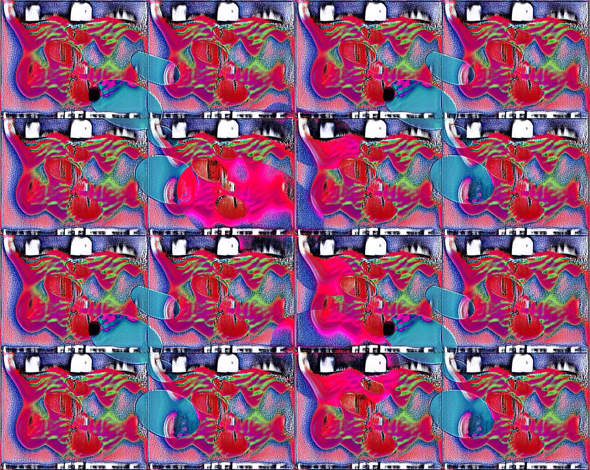
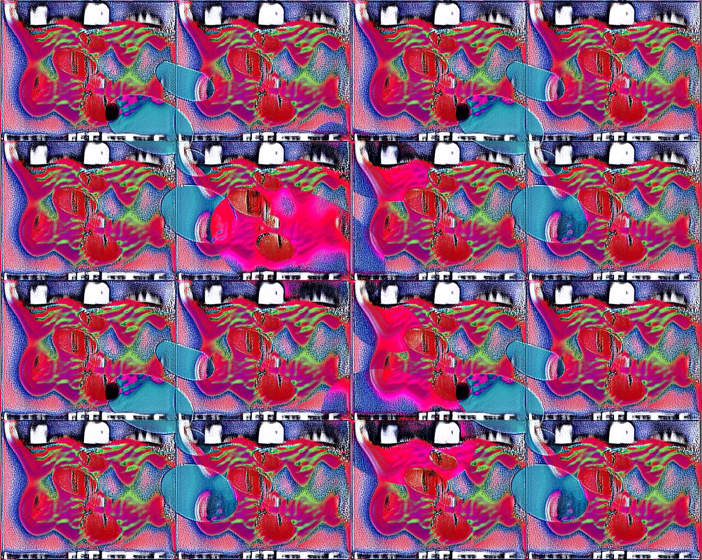

×


2021
4 Patas 5 Bocas— patterns for Jalaconda's collection presented in Casa de Criadores.
See more


See more
2020
Widows Reality Sessions — audio reactive landscape for DJ Sustancia's mix.
> Widows Collective
2021 Widows Reality Sessions — introduction visuals.
> Music by Yulav, Title design by Layla RubÃ.
> Widows Collective
2021 Widows Reality Sessions — introduction visuals.
> Music by Yulav, Title design by Layla RubÃ.
2020
Reptilian Encounters — heavily inspired by the power of snake imagery in our native cultures, @jalinha97 and I built a reptilian-themed dataset and trained a neural network using this data. A selection of these outputs were printed as Jalaconda pieces.
> Jalaconda's ig


> Jalaconda's ig
2021
Jalaconda S2021 — A video project which evolved into an absorbing texture-seeking experience.
See more


See more


2022
Memetic [̲̅t][̲̅i][̲̅l][̲̅e][̲̅w][̲̅o][̲̅r][̲̅k][̲̅s]

Runic ≋t≋i≋l≋e≋w≋o≋r≋k≋s≋


Memetic [̲̅t][̲̅i][̲̅l][̲̅e][̲̅w][̲̅o][̲̅r][̲̅k][̲̅s]

Runic ≋t≋i≋l≋e≋w≋o≋r≋k≋s≋
2021
Prenostalgia — sound experience.
Web Interface ↗
Special thanks to Jorge Lorenzo Flores and all involved in the recordings.
Prenostalgia is a sonic autoetnography through intimate voice memos recorded from 2015 ⇢ 2021. The audios were reconstructed by a neural network as a detachment exercise:
Web Interface ↗
Special thanks to Jorge Lorenzo Flores and all involved in the recordings.